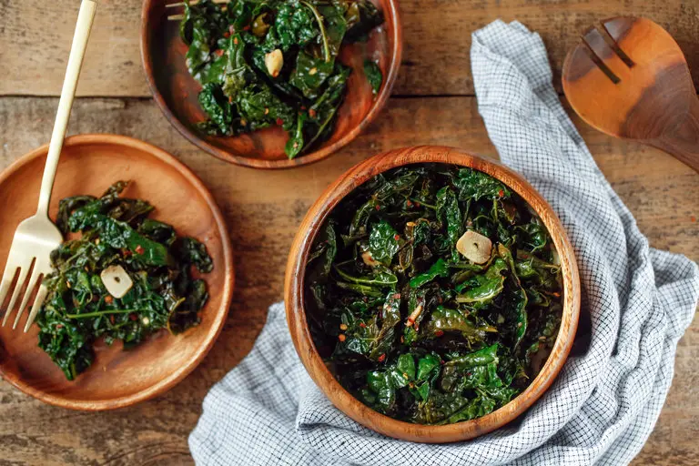

Sauteed Kale (from NYT Cooking)

This is a technique that elevates basic sauteed greens into something even more savory (or sweet) and tender.
This is a recipe I initially found in the New York Times Cooking section.
Kale is a cruciferous leafy vegetable with high concentrations of healing and regenerative compounds. Quite frankly, kale is an anti-aging food.
As I approach my late 30s, I am becoming more intentional about consuming 3-4 servings of cruciferous veggies each week. This still isn't enough, but it's a starting point.
I use this recipe multiple times every week by subsituting orange juice for red wine vinegar, or sometimes combining the two for a flavor kick!
You can use it how ever you'd like. Additionally, note that there is NO salt introduced to the leaves until after it's been removed from the heat. This is important.
Adding salt before or during the tenderizing of leaves will actually prevent the leaves from getting tender. Waiting until the end to add salt gives a much better chewing experience.
Just eat your kale!
Ingredients
- 3-4 tbsp Avocado Oil
- 3-4 garlic cloves, peeled and smashed
- 1 large bunch of kale, trimmed from stems and coarsely chopped
- 1/4-1/2 cup of stock (beef, chicken, veggie, whatever you have on hand)
- coarse salt, black ground pepper (to taste)
- 2 Tbsp red wine vinegar, orange juice, or 1 Tbsp of each mixed
Steps
- Heat oil in a large sautee pan over medium-high heat until it shimmers.
Add the garlic to the oil, and cook for 1-2 minutes until it's getting soft.
- Add kale to the pan, turn the heat to high and add the stock.
Use a spoon to toss the greens in the oil and stock, then cover and cook for approximately 5 to 7 minutes, until it is soft and wilted, but still quite green.
Remove cover and continue to cook, stirring occasionally until all the liquid has evaporated, another 1 to 2 minutes.
Season to taste with salt and peppers, add vinegar and/or orange juice, and toss to combine.